In two minutes
Thirty balls, three wickets: read the delivery, swipe a direction, time the swing. It started as a five-over hitting game and grew into three modes — The Blast, Test Survival and Rivals — with a fourth, Super10, in the works. No install and no sign-up: you open a link and you’re batting. The hard design problems were the ones that came with that promise.
Numbers are from GoatCounter, 16 Sep – 27 Oct 2026. It counts an event at most once per player per day, so most figures are player-days rather than people; the player count is exact. Ad blockers hide some players, so treat ratios as approximate.
Chapter 01
An experiment that wouldn’t stop
It started as a test of ChatGPT Astra. The base it gave me was good enough that I didn’t want to throw it away, so I kept building — with Claude.
On 7 September it was a five-over batting game in the browser. By the end of the same day it had swipe batting on phones, sounds and a public link. Seven weeks and 765 commits later it has three modes, leaderboards, player profiles, rival matches and a locker room.
My part is the product: the idea, the direction and every design call. I drew the screens in Figma first — a handover file that runs from foundations and a journey map to every state of every flow — and built them with Claude Code, testing each change on my own phone before it shipped.
The audience turned out to be exactly who it was built for: 97% in India, 95% on phones, 68% on iPhones. That last figure matters more than it looks, and it is where chapter two starts.

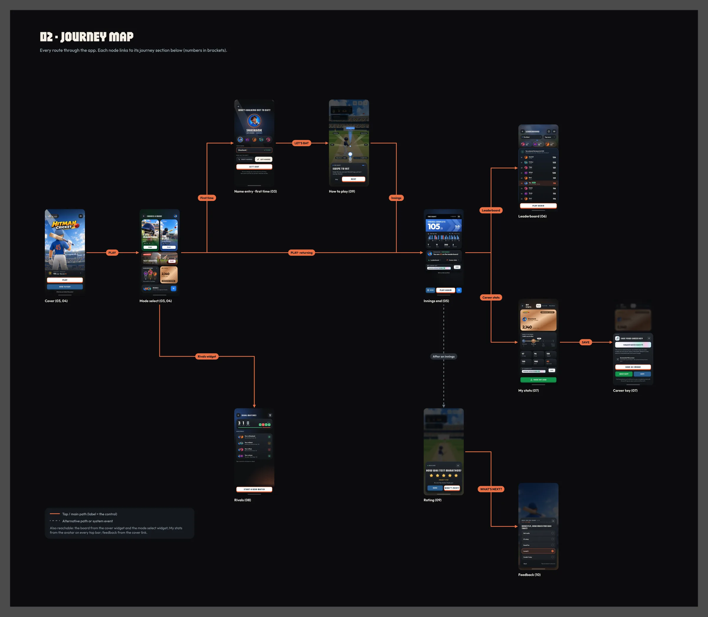
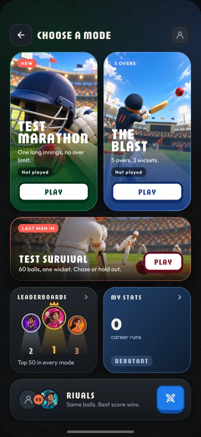
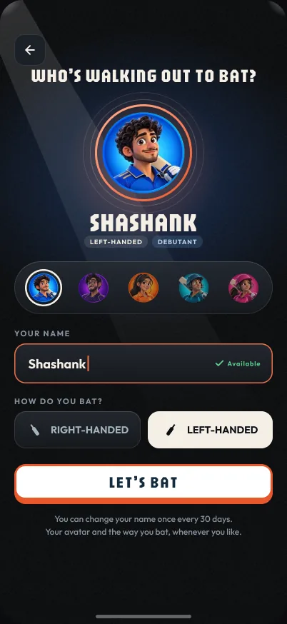
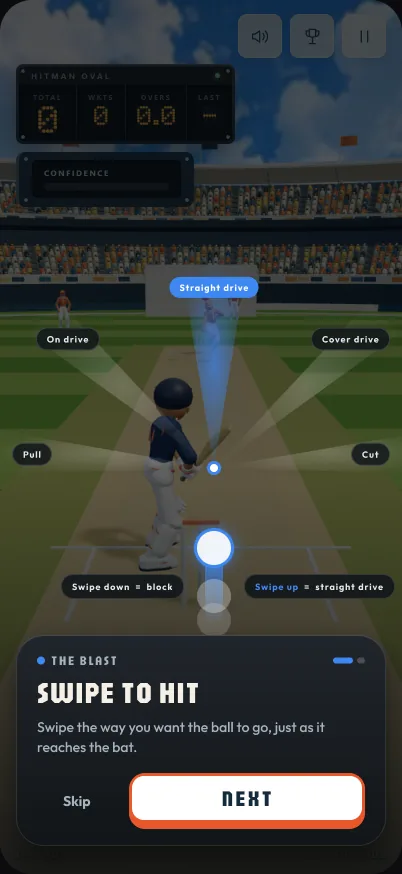
Chapter 02
Identity without accounts
No sign-up was the promise. But without an account, a player’s career lives in the browser — and on an iPhone, the browser forgets.
The problem
A career is runs, rank and everything a player has unlocked. Lose the browser’s memory and you lose it all — worse, the game quietly makes a second player under the same name. Safari deletes everything a page’s script stored after a week away. With two players in three on iPhones, that isn’t an edge case. It’s the main case.
The constraints
- A new player gives a name and is batting. Nothing more may stand before the first ball.
- Mobile web only: no app storage to lean on.
- Private windows can’t be reliably detected, and forget everything on close.
- People forward links, so no link may ever wipe anything on sight.
Version one: make the browser hard to lose
- Identity is kept in three places at once — local storage, a long-lived cookie and IndexedDB — and restored from whichever survives. When they disagree, the oldest wins.
- A fourth copy Safari can’t wipe: a “return ticket”, a cookie the server sets rather than the page, which Safari keeps for a year. When the other three come back empty, it puts the player back before the first ball. 8 players were brought back this way without doing a thing.
- A career key for when even that fails: three words and two digits, saved as a picture, to WhatsApp or copied, with a “bring your record back” sheet to use it.
- Names that can’t be stolen: a name and the same name with a number on the end belong to one person for a day after it’s claimed. A player can rename once every 30 days, and going back to an old name is free.
?fresh=1asks before it clears anything, because a link is something people send each other, and one that wiped a career on sight would be a prank with a cost.
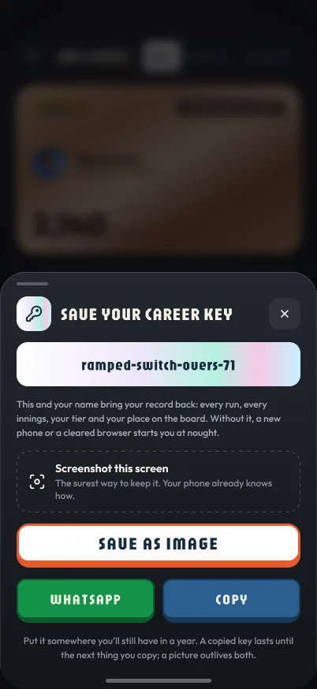
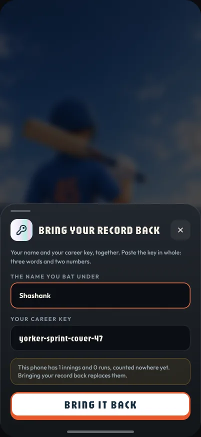
What the numbers said
Players claimed names happily. They didn’t save keys: about two in three named players had no way back if their browser forgot them. A key is something you have to remember to keep. A password is something people already know how to keep — and their phone offers to remember it for them.
Version two: a password, and most of the design is when to ask
- Never before the first ball. The name screen asks for a name, a kit and a batting hand, nothing more.
- On the end-of-innings card, once a career passes 50 runs — when a player has something worth protecting — in solid orange so it can’t be mistaken for Play again.
- On My Stats from the first visit, as a card on the career page.
- A nudge sheet after three end cards walked past, then every five, never twice in a visit, and never in the way of batting.
- A hidden username field so Safari and Chrome offer to save it; an optional security question; and restore that lists names with a password, so players find themselves by name.

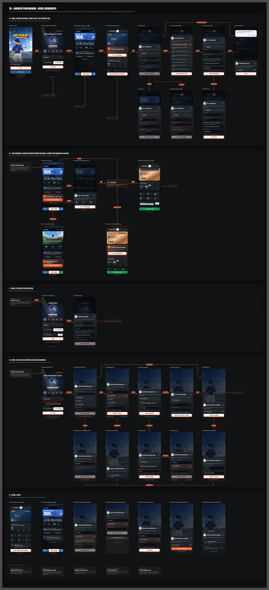
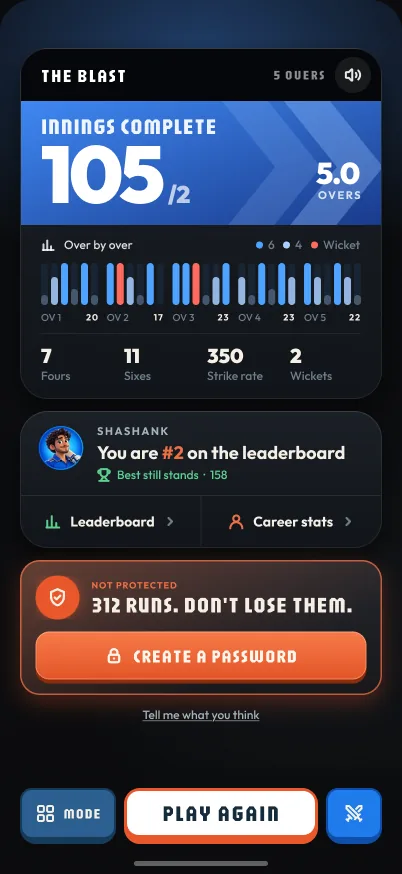
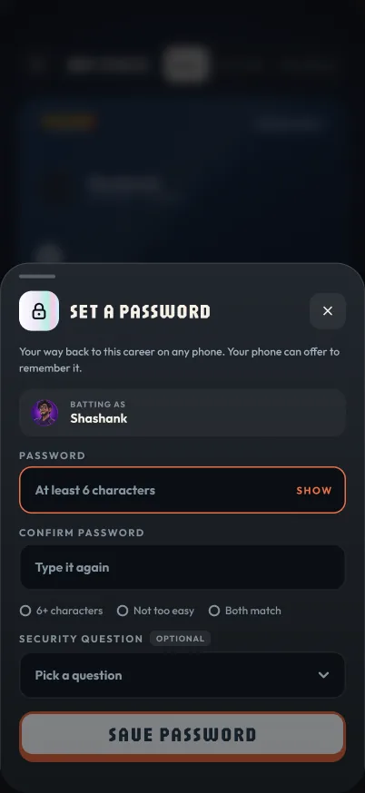
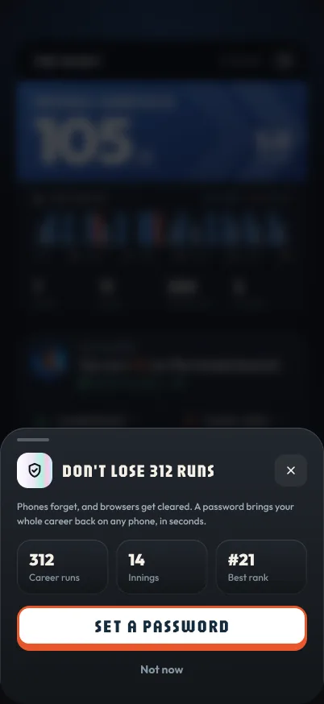
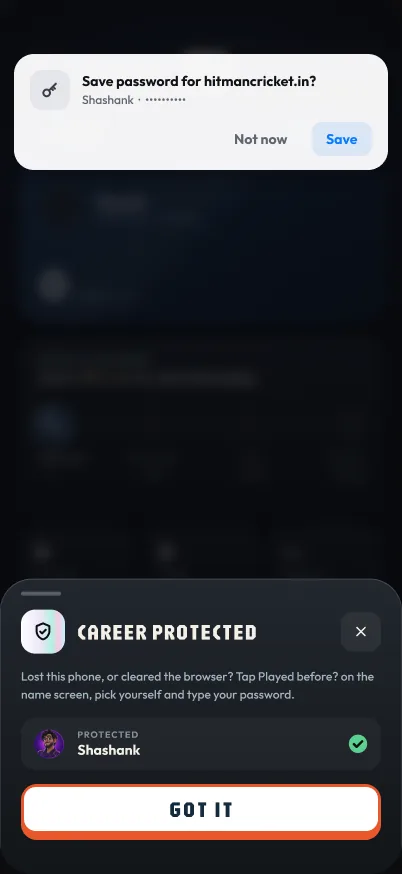
Asking in context worked. Interrupting mostly didn’t.
The numbers are small, but they point the same way. And the part of this chapter nobody ever sees — the return ticket — is the part that saved the most careers without asking anyone for anything.
Chapter 03
Playing friends who aren’t online
Cricket is something you argue about with friends. But friends are rarely free at the same moment — so Rivals had to work whether they were or not.
One link is one match room. Whoever opens it joins; whoever taps Play bats; every ball is written to the room as it happens. Two friends can bat at the same time and see each other’s balls land, or one can bat tonight and the other on Thursday — the room reads the same either way. Nobody sees a score until their own last ball.
- The room explains itself. A dashed seat waiting for a friend; their face appearing without a tap when they join; a ring that fills ball by ball while somebody bats; “needs 7 off 4 balls” for the one watching.
- It ends cleanly. A week with no second innings closes the match; leaving one half-played for a day forfeits it; declining goes down as a loss.
- It grows if it’s forwarded. A third friend on the link turns the room into a leaderboard, up to four seats. A fifth is told, kindly, that they’re late to the party.
- Everyone bats in their own colours, fixed in the order they joined, so every phone in the room agrees on who’s who.
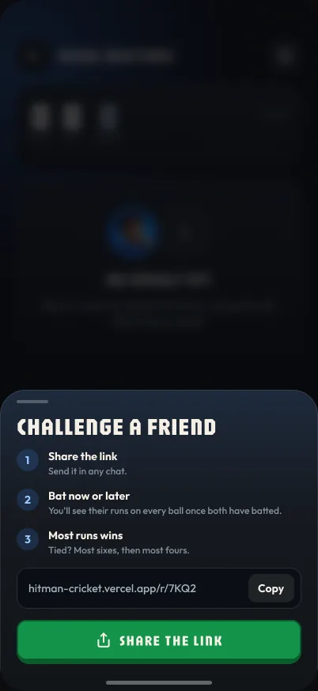
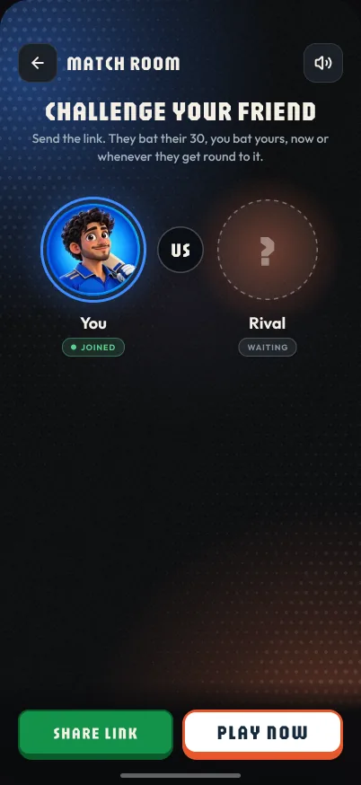
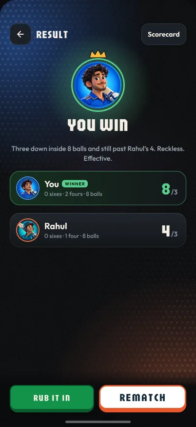
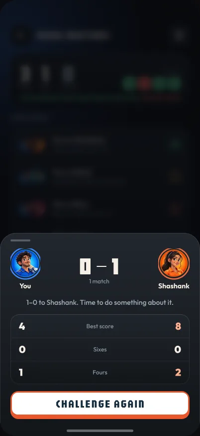
Building for “not at the same time” was the bet. Nine matches in ten say it was the right one.
Chapter 04
The Dressing Room
Players came back — three in four of returns were the very next day — but a daily player who was never going to top the board had nothing to chase.
So I built them a reason: a 3D locker room where kits and bats are earned, never bought. Every innings in every mode counts towards something, past innings included, and the batter walks out in what you’ve won — in every mode, and in Rival Matches where your opponent sees it.
- You press unlock. No pop-up mid-flow: an earned item waits with a dot, and the moment plays when the player asks for it. Even the free Boom bat waits, because handing it over on arrival took the best part away.
- Every lock says what it takes — try a locked item on, see the exact target, and go play for it in one tap.
- Flat mock-ups failed; a 3D prototype won in one evening, with the real batter and real bat art, so what I reviewed was what would ship.


14 days before against 13 after, launch day left out. Profiles and new shots shipped in the same fortnight and new visitors fell, so the rise came from returning players — who the room was made for. The jump is clear; how much of it is the room alone, this data can’t say.
The full story The Dressing Room, in three days →A Figma template that wraps onto a 3D bat, five rounds to make a target readable, what broke on a real phone, and a 1.7 MB launch animation replaced by 8 KB of code.
Chapter 05
One card for every ending
Every mode had grown its own ending, and the place on the board each one showed could be a guess. The end of an innings is the screen players see most. It had to be one thing, and it had to be true.

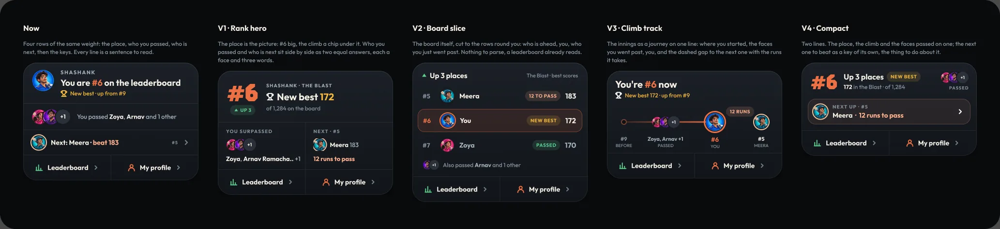
- One card for every mode, with a part for each: the Blast’s over-by-over chart, the Marathon’s worm, Survival’s injury ring.
- A place is never a guess. The card waits for the server’s answer rather than reading the board on screen; until it arrives, the innings is “going up”.
- Named players have nothing to press. A place they earn is posted for them, which removed a step rather than decorating one.
- The buttons sit outside the scroll. Inside it, they covered the career key.
- Only finished innings count towards a career. Walking out mid-innings happened on half the days anyone played; if it counted, restarting whenever an over went badly would be a way to pile up runs.

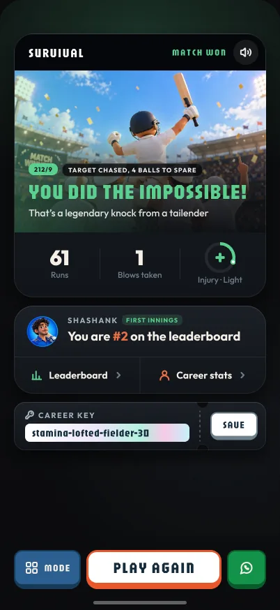
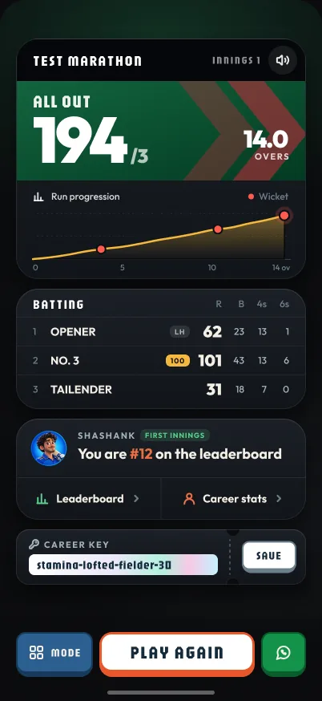
What went wrong
Two bugs on this card got past every automated check. The checks reached the card from the cover; players reach it by finishing an innings. Same card, different road, different bugs.
Reach the screen the way a player does.
Chapter 06
Teach once, ask late
A two-minute game has no room for a manual, and no patience for a survey. Both are about restraint: say it once, in context, then get out of the way.
Teaching
- The first innings teaches on the ground itself: five lanes of light fan out from the bat, one per stroke, and the confidence meter is shown through a hole cut in the dark overlay.
- The cards never appear twice, and anyone who has batted before skips them.
- In a Test Marathon they’re drawn mirrored for a left-hander.
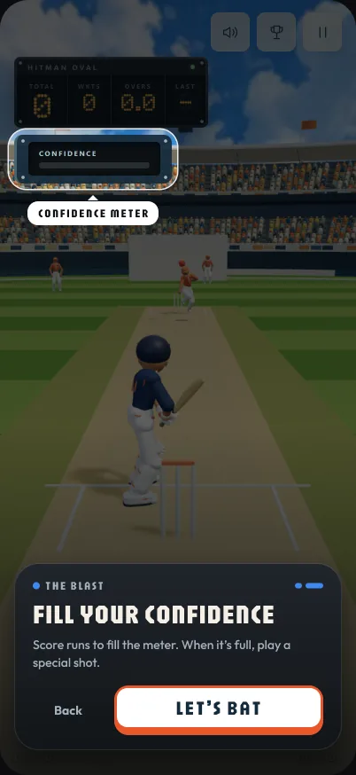
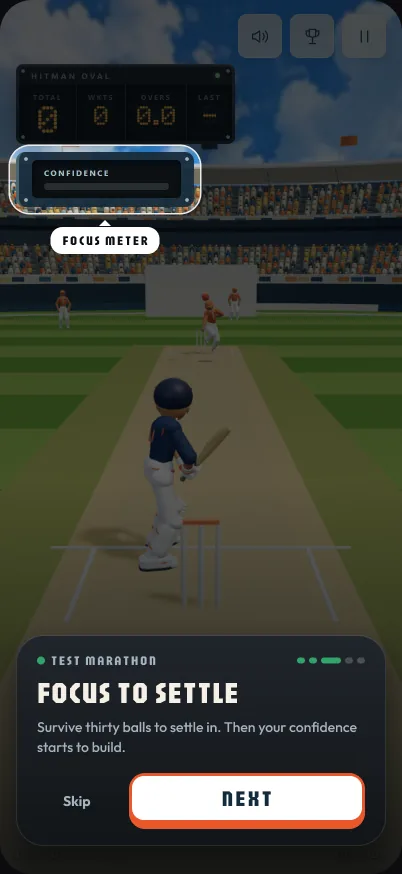
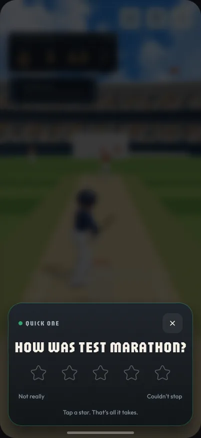
Asking
Every rule about the rating prompt is a rule about not asking:
- Never on anyone’s first innings — that’s an opinion of controls they haven’t learned yet.
- The first finished innings of a new mode asks about that mode, while it’s fresh; the third finished innings asks about the game.
- One ask a visit. Waved away, it keeps quiet for seven days; waved away three times, it stops for good.
- The reaction scales with the stars: one or two settle quietly, and five is hit for six.
Chapter 07
What the numbers said, and what’s next
I measured questions, not vanity. Every event in the game exists to answer one, and that made it easy to see what worked — and what didn’t.
What worked
- The loop. On three days in four that someone started an innings, they replayed one too.
- The core. Returning players made up 78% of the days anyone played, and a third of play-days came from players on their 11th day or later. In the week of 20 October new players fell to 25, and returning players held at about 276.
- Privacy by design. Scores go out as ranges, never figures; there’s no cookie banner because there’s nothing to consent to; and retention is measured in the player’s own browser, so the counter stays anonymous.
What didn’t, yet
Sharing. The career card is the most polished thing in the game, and it was shared about a dozen times. It looks like a growth loop and isn’t one yet. That’s the open problem I’d point at first.
Next: Super10
A ten-over innings played against a field you can see, with a Power Surge to time. Before building any of it, I put a coming-soon card on Choose a mode with one button: I’M EXCITED. 8 of the 18 players who opened it pressed it. Small numbers again — but a reason to build, measured before the build.

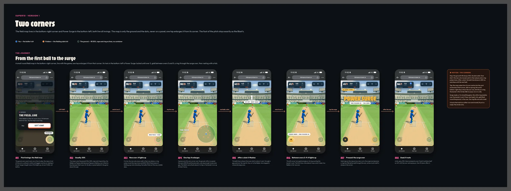

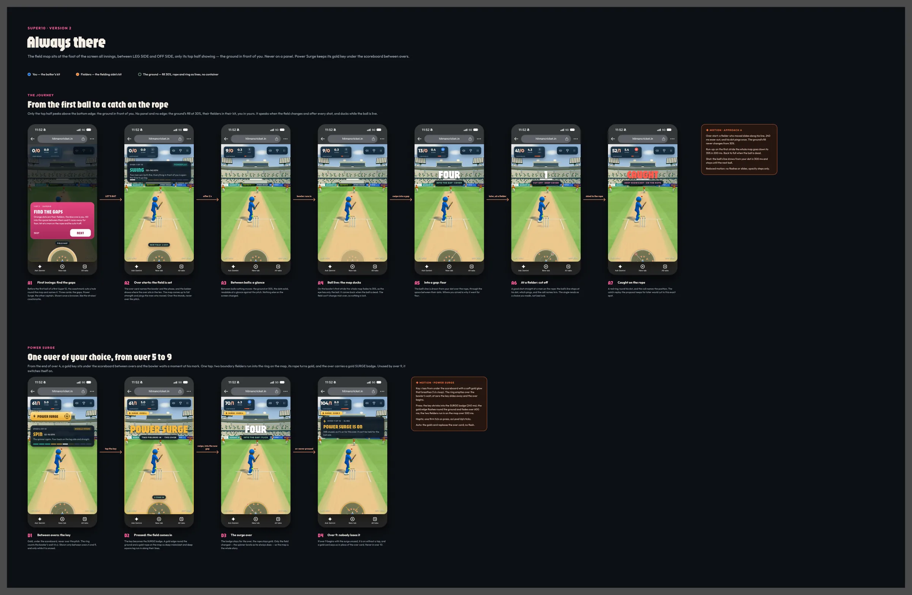
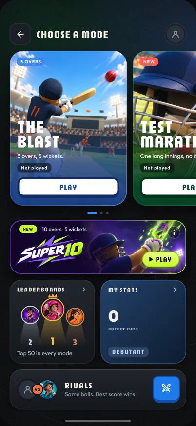
What I’d tell myself on day one
Testing from a shortcut tests the shortcut.
The password card on the end card beat the nudge sheet ten to two.
The return ticket saved careers without asking anyone for anything.
Small numbers are fine when each one answers something.